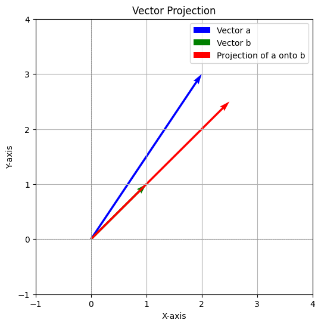

Analytic geometry
Vectors I
Problem 1
Question: By what number should vector a = [3, 4] be multiplied so that its length is equal to 1?
Solution:
1. The length of a vector v = [x, y] is calculated as:
For vector a = [3, 4]:
- To make the length of the vector equal to 1, divide each component of the vector by its length:
Answer: Vector a should be multiplied by \( \frac{1}{5} \).
Problem 2
Question: Calculate the length of vector b = [1, 1] and find the unit vector of this vector.
Solution: 1. The length of vector b is:
- The unit vector of b is obtained by dividing each component of the vector by its length:
Answer: Length of b = \( \sqrt{2} \), Unit vector of b = \([ \frac{1}{\sqrt{2}}, \frac{1}{\sqrt{2}} ]\).
Problem 3
Question: Plot the vector and the unit vector from the previous exercise.
Solution: To visualize, plot the vector b = [1, 1] and its unit vector \([ \frac{1}{\sqrt{2}}, \frac{1}{\sqrt{2}} ]\) on a Cartesian plane. The unit vector will have the same direction as b, but its length will be 1.
import matplotlib.pyplot as plt
import numpy as np
# Define the vector and its unit vector
vector_b = np.array([1, 1])
unit_vector_b = vector_b / np.linalg.norm(vector_b)
# Create a figure and axis
plt.figure(figsize=(6, 6))
plt.axhline(0, color='gray', linewidth=0.5, linestyle='--')
plt.axvline(0, color='gray', linewidth=0.5, linestyle='--')
# Plot the vector b
plt.quiver(0, 0, vector_b[0], vector_b[1], angles='xy', scale_units='xy', scale=1, color='blue', label='Vector b')
# Plot the unit vector of b
plt.quiver(0, 0, unit_vector_b[0], unit_vector_b[1], angles='xy', scale_units='xy', scale=1, color='green', label='Unit Vector of b')
# Set plot limits
plt.xlim(-1.5, 1.5)
plt.ylim(-1.5, 1.5)
# Add labels, legend, and title
plt.legend()
plt.grid()
plt.title("Vector and Unit Vector")
plt.xlabel("X")
plt.ylabel("Y")
# Show the plot
plt.show()
Problem 4
Question: Calculate the length of vector c = [1, 2, 3] and find the unit vector of this vector.
Solution: 1. The length of vector c is:
- The unit vector of c is:
Answer: Length of c = \( \sqrt{14} \), Unit vector of c = \([ \frac{1}{\sqrt{14}}, \frac{2}{\sqrt{14}}, \frac{3}{\sqrt{14}} ]\).
Problem 5
Question: Find the Cartesian coordinates of vector v = [2, 3, 4] in the basis:
Solution: Let vector v = [2, 3, 4] be represented in the given basis as:
where \( \mathbf{b_1} = [1, 0, 1] \), \( \mathbf{b_2} = [0, 1, 0] \), and \( \mathbf{b_3} = [1, 0, -1] \).
Set up the system of equations:
Simplify:
1. From the first equation: \( c_1 + c_3 = 2 \).
2. From the second equation: \( c_2 = 3 \).
3. From the third equation: \( c_1 - c_3 = 4 \).
Solve for \( c_1 \) and \( c_3 \):
- Add \( c_1 + c_3 = 2 \) and \( c_1 - c_3 = 4 \):
- Substitute \( c_1 = 3 \) into \( c_1 + c_3 = 2 \):
Answer: Cartesian coordinates in the given basis: \( c_1 = 3, c_2 = 3, c_3 = -1 \).
Vectors II
Problem 1: Perform vector addition and plot both vectors along with their sum
Given:
- Vector 1: [2, 1]
- Vector 2: [-1, 1]
Solution:
- Add the vectors component-wise:
- Answer:
The sum of the vectors is \([1, 2]\).
Python Code for Plotting:
import matplotlib.pyplot as plt
import numpy as np
# Define the vectors
vector_1 = np.array([2, 1])
vector_2 = np.array([-1, 1])
vector_sum = vector_1 + vector_2
# Create a figure and axis
plt.figure(figsize=(8, 8))
# Plot vectors
plt.quiver(0, 0, vector_1[0], vector_1[1], angles='xy', scale_units='xy', scale=1, color='blue', label='Vector 1: [2, 1]')
plt.quiver(0, 0, vector_2[0], vector_2[1], angles='xy', scale_units='xy', scale=1, color='green', label='Vector 2: [-1, 1]')
plt.quiver(0, 0, vector_sum[0], vector_sum[1], angles='xy', scale_units='xy', scale=1, color='red', label='Sum: [1, 2]')
# Add labels, grid, legend, and title
plt.axhline(0, color='gray', linewidth=0.5, linestyle='--')
plt.axvline(0, color='gray', linewidth=0.5, linestyle='--')
plt.grid()
plt.legend()
plt.xlim(-2, 3)
plt.ylim(-2, 3)
plt.title("Vector Addition")
plt.xlabel("X-axis")
plt.ylabel("Y-axis")
# Show the plot
plt.show()

Problem 2: Calculate the area of the triangle spanned by vectors
Given:
- Vectors: u = [2, 1, 2], v = [-1, 1, 1]
Solution:
- Compute the cross product \( \mathbf{u} \times \mathbf{v} \):
Cross product result: \([-1, -4, 3]\).
- Compute the magnitude of the cross product:
- The area of the triangle is half the magnitude:
Answer:
The area of the triangle is \( \frac{\sqrt{26}}{2} \).
Problem 3: Calculate the volume of the parallelepiped spanned by vectors
Given:
- Vectors: a = [2, 1, -1], b = [-1, 1, 0], c = [1, 2, 1]
Solution:
-
Compute the scalar triple product \( \mathbf{a} \cdot (\mathbf{b} \times \mathbf{c}) \).
-
Compute \( \mathbf{b} \times \mathbf{c} \):
Result: \( [1, 1, -3] \).
- Compute \( \mathbf{a} \cdot (\mathbf{b} \times \mathbf{c}) \):
- The volume of the parallelepiped is the absolute value of the scalar triple product:
Answer:
The volume of the parallelepiped is \( 6 \).
Vectors III
Problem 1: Divide the line segment connecting \( A(-1, 2) \) and \( B(3, -2) \) in the ratio \( 1 : 3 \).
Solution:
The formula to divide a line segment in the ratio \( m : n \) is:
Here:
- \( A(x_1, y_1) = (-1, 2) \)
- \( B(x_2, y_2) = (3, -2) \)
- Ratio \( m : n = 1 : 3 \)
Substitute into the formula:
Answer: The point dividing the line in the ratio \( 1:3 \) is \( (0, 1) \).
Problem 2: Project vector \( \mathbf{a} = (3, 4) \) onto the \( OX \)-axis and \( OY \)-axis.
Solution:
To project a vector onto an axis: - Onto the \( OX \)-axis: Set the \( y \)-component to 0. - Onto the \( OY \)-axis: Set the \( x \)-component to 0.
For \( \mathbf{a} = (3, 4) \): - Projection onto \( OX \): \( (3, 0) \) - Projection onto \( OY \): \( (0, 4) \)
Answer:
- Projection onto \( OX \): \( (3, 0) \)
- Projection onto \( OY \): \( (0, 4) \)
Problem 3: Project vector \( \mathbf{a} = (2, 3) \) onto vector \( \mathbf{b} = (1, 1) \).
Solution:
The formula for projecting \( \mathbf{a} \) onto \( \mathbf{b} \) is:
- Calculate \( \mathbf{a} \cdot \mathbf{b} \):
- Calculate \( \|\mathbf{b}\|^2 \):
- Compute the projection:
Answer: The projection of \( \mathbf{a} \) onto \( \mathbf{b} \) is \( \left( \frac{5}{2}, \frac{5}{2} \right) \).
Python Code:
import matplotlib.pyplot as plt
import numpy as np
# Define vectors
a = np.array([2, 3])
b = np.array([1, 1])
# Calculate the projection
b_norm_squared = np.dot(b, b)
projection = (np.dot(a, b) / b_norm_squared) * b
# Create a plot
plt.figure(figsize=(6, 6))
plt.axhline(0, color='gray', linewidth=0.5, linestyle='--')
plt.axvline(0, color='gray', linewidth=0.5, linestyle='--')
# Plot the vectors
plt.quiver(0, 0, a[0], a[1], angles='xy', scale_units='xy', scale=1, color='blue', label='Vector a')
plt.quiver(0, 0, b[0], b[1], angles='xy', scale_units='xy', scale=1, color='green', label='Vector b')
plt.quiver(0, 0, projection[0], projection[1], angles='xy', scale_units='xy', scale=1, color='red', label='Projection of a onto b')
# Add labels and legend
plt.legend()
plt.grid()
plt.xlim(-1, 4)
plt.ylim(-1, 4)
plt.title('Vector Projection')
plt.xlabel('X-axis')
plt.ylabel('Y-axis')
plt.show()

Problem 4: Project vector \( \mathbf{b} = (1, 1) \) onto vector \( \mathbf{a} = (2, 3) \).
Solution:
Use the same projection formula as Problem 3.
- Calculate \( \mathbf{b} \cdot \mathbf{a} \):
- Calculate \( \|\mathbf{a}\|^2 \):
- Compute the projection:
Answer: The projection of \( \mathbf{b} \) onto \( \mathbf{a} \) is \( \left( \frac{10}{13}, \frac{15}{13} \right) \).
Python Code:
Similar to Problem 3, modify the vectors to reflect \( a \) and \( b \).